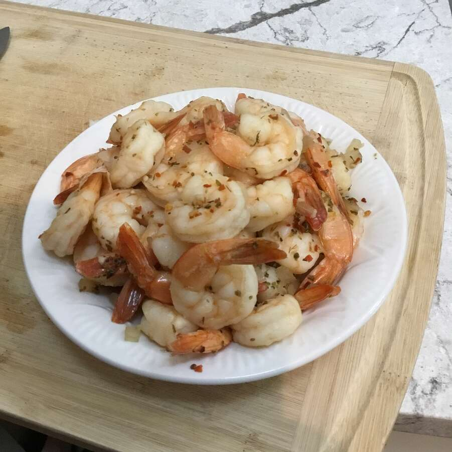

Quick Shrimp

Description:
This is how I prepare shrimp. You can eat these chilled, with cocktail
sauce or add them to your favorite recipe. I love to add these shrimp
to coctel de camaron (Mexican shrimp cocktail).
Ingredients:
- 2 Lbs Shrimp (thawed)
- Old Bay Seasoning (to taste)
- 2-3 Fresh Lemons
Steps:
- Add Old bay to water with 1-2 sliced lemons.
- Place shrimp in water and let boil for 4 minutes Or until shrimp
break apart and are fully cooked
- Gar nish with fresh lemon and enjoy!